Figure 10: Baseline final regret distributions


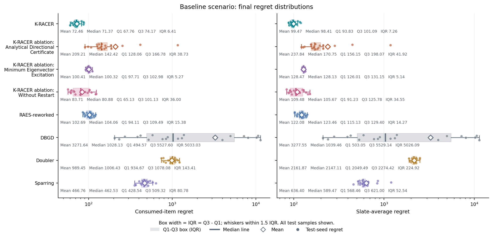
Boxes show Q1-Q3, the line is the median, diamonds are means, and dots are individual test-seed regrets. Whiskers use 1.5 IQR; numerical summaries are shown beneath each box.
Saved simulation figures in PNG, SVG, and PDF formats. Raw simulation data and CSV tables are stored locally and are not included in this publication.
Project README | Figure metadata and checksums

Boxes show Q1-Q3, the line is the median, diamonds are means, and dots are individual test-seed regrets. Whiskers use 1.5 IQR; numerical summaries are shown beneath each box.
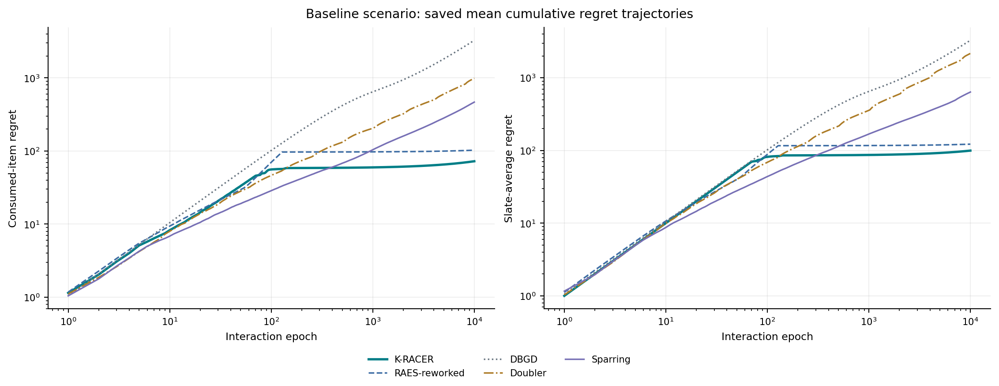
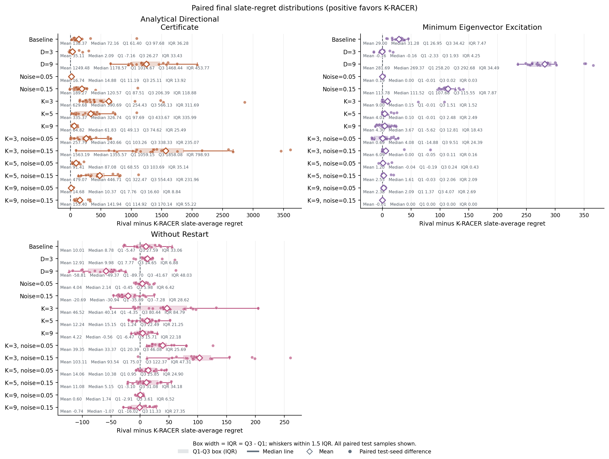
Each dot is one seed-aligned ablation-minus-K-RACER slate-regret difference. Boxes show Q1-Q3, median lines, mean diamonds, and 1.5 IQR whiskers; numerical summaries appear beneath each box. Positive values favor K-RACER.
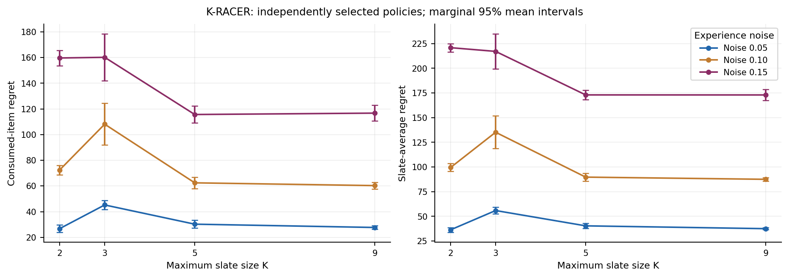
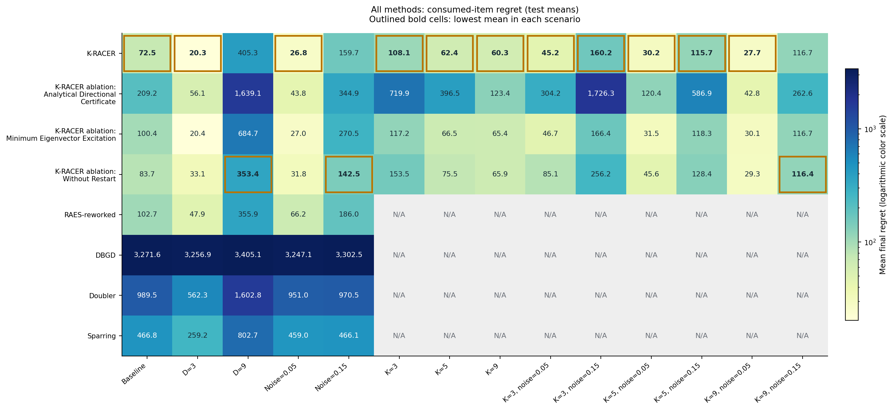
Gold outlines and bold labels identify the lowest unrounded test-mean regret in each scenario column. All exact ties are highlighted. N/A cells are excluded from the comparison.
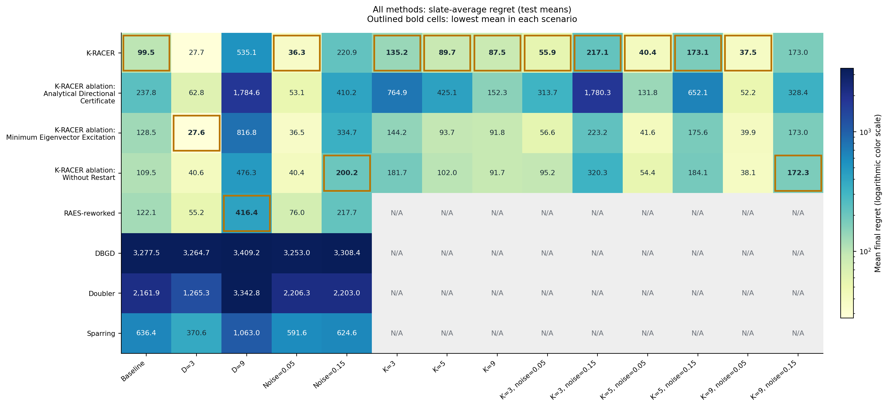
Gold outlines and bold labels identify the lowest unrounded test-mean regret in each scenario column. All exact ties are highlighted. N/A cells are excluded from the comparison.
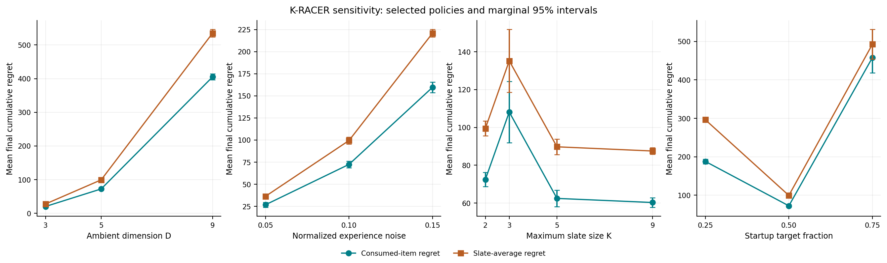
Four panels compare dimension, experience noise, maximum slate size, and Startup target fraction. Teal circles show consumed-item regret and orange squares show slate-average regret on the same axes. Bars are marginal 95% Student-t mean intervals. Each Startup target selects gamma and the post-Startup budget on validation seeds before held-out evaluation.
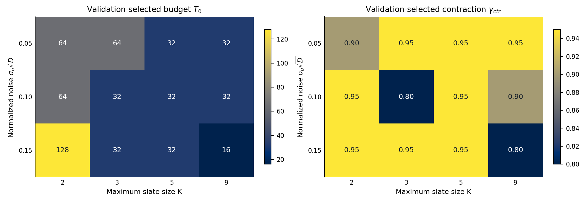
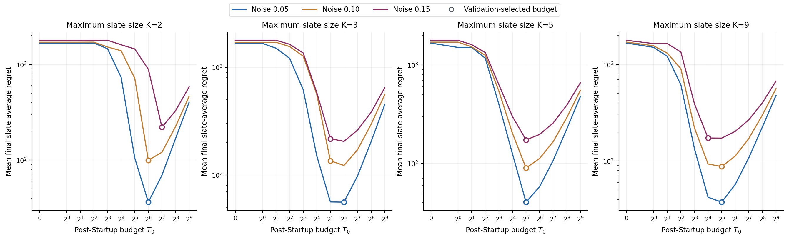
One panel per maximum slate size K overlays the current experience-noise levels in different colors. Each K/noise combination retains its own saved validation-selected contraction parameter. Curves show held-out mean final slate-average regret; open circles mark the validation-selected budgets. No test outcome selects a policy.
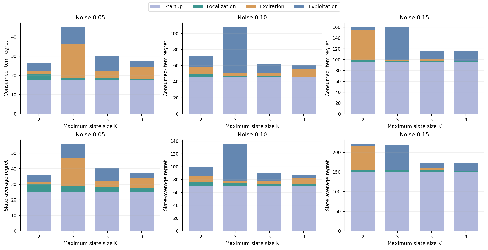
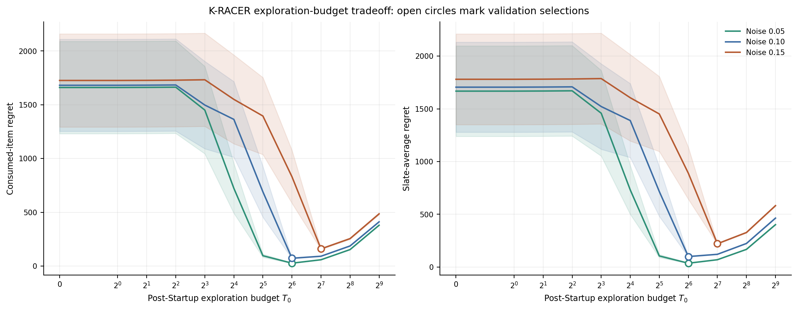
D=5 and K=2 at the current noise levels. Within each setting, contraction is fixed at its saved validation selection. Curves are test means, shading is a marginal 95% Student-t interval, and circles mark validation-selected budgets. T0 excludes Startup; no test-based selection is performed.
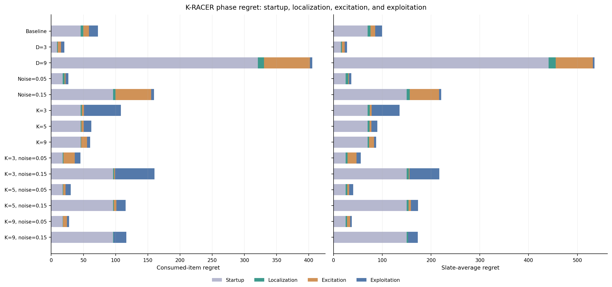
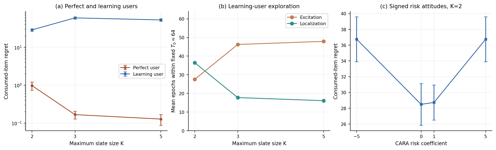
Fresh supplied-cone runs of the historical protocol with the current manual implementation: D=3, a 45-degree cone, T0=64, contraction 0.9, normalized noise 0.10, and disjoint paired seeds 26000-26019. Perfect users choose by true utility with zero comparison margins; learning users use Bayesian-CARA scores. These are new runs, not the paper's archived numerical outcomes. Numerical-precision stops: 0. Connecting lines do not fit scaling laws.